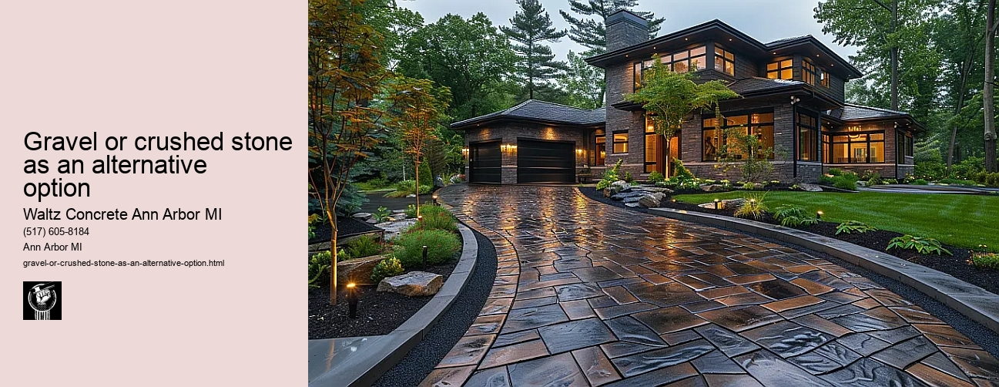

News
Concrete Driveway Installation Ann Arbor Mi
Concrete Driveway Installation Ann Arbor Mi
Choosing the right contractor for installation
Cost of concrete driveway installation in Ann Arbor
Permit requirements for driveway installation in Ann Arbor
The process and timeline of concrete driveway installation
Different types of concrete used in driveways
Maintenance and Repair of Concrete Driveways in Ann Arbor Mi
Maintenance and Repair of Concrete Driveways in Ann Arbor Mi
Preventive maintenance tips for durability
Common causes for concrete driveway damage
Professional companies offering repair services in Ann Arbor
Doityourself versus professional repairs
Costs associated with repairing a concrete driveway
Designs and Styles of Concrete Driveways in Ann Arbor Mi
Designs and Styles of Concrete Driveways in Ann Arbor Mi
Popular design trends for driveways
Considering climate factors when choosing a design or style
Unique customizations available for concrete driveways
Influence of home architecture on driveway design
Stamped stained and decorative options
Environmental Impact of Concrete Driveways in Ann Arbor Mi
Environmental Impact of Concrete Driveways in Ann Arbor Mi
Carbon footprint associated with concrete production
Use of sustainable materials in concrete driveways
Drainage considerations to reduce environmental impact
Local regulations regarding environmentally friendly driveways
Potential use of permeable or porous pavement
Alternatives to Concrete Driveways in Ann Arbor Mi
Alternatives to Concrete Driveways in Ann Arbor Mi
Asphalt driveways and their proscons
Paver stone driveways and their benefitsdrawbacks
Gravel or crushed stone as an alternative option
Comparing costs between different driveway materials
Resinbound surfaces as emerging technology
About Us
Contact Us

Gravel or crushed stone as an alternative option
Gravel or crushed stone as an alternative option
Title: Gravel and Crushed Stone: An Effective Alternative in Construction
The world of construction is a complex and ever-evolving one, continuously finding innovative ways to provide strength, durability, and aesthetic appeal to buildings. One such innovation that has been gaining considerable attention is the use of gravel or crushed stone as an alternative building material.
Gravel and crushed stone have always been crucial elements in the construction industry, but their application has expanded beyond merely being used as sub-base materials under roads or structures. The innate characteristics these materials possess make them excellent choices for various applications.
To understand why gravel and crushed stone are beneficial alternatives within the construction domain, we must first explore what they are individually. Gravel is a naturally occurring material formed from rocks eroded over time into small pieces by water currents. It can be found in different sizes depending on its use; larger gravels are typically employed in drainage systems whilst smaller ones can be utilized in concrete mixtures.
On the other hand, crushed stone is derived from blasting and crushing large stones into desired sizes. Unlike gravel, which is rounded due to natural erosion processes, crushed stone usually has sharper edges that interlock when compacted - a property that contributes significantly to its strength.
Both gravel and crushed stone offer numerous benefits as alternative construction materials. Firstly, they provide exceptional durability. Their hardness makes them highly resistant to weathering compared to other materials like sand or silt. This resistance results in increased longevity of structures built using these materials.
Secondly, both commodities are eco-friendly options; they do not require any chemical processing before usage unlike cement or steel hence reducing environmental pollution levels significantly. Moreover, since both materials are abundant globally, their extraction does not deplete resources drastically compared to other non-renewable building materials.
Another notable advantage is cost-effectiveness; acquiring gravel or crushed stone generally incurs less expense than traditional building materials such as bricks or concrete slabs making them a budget-friendly choice for builders.
Moreover, the aesthetic appeal of these materials should not be underestimated. Crushed stone and gravel can add unique textures and colors to landscapes or buildings. Whether it's a gravel path winding through a garden or crushed stone accentuating modern architecture, these materials offer an artistic flair that is hard to match.
While gravel and crushed stone may not be the first options that come to mind when thinking about construction materials, their benefits are undeniable. Their strength, durability, cost-effectiveness, and environmental friendliness make them excellent alternatives in an industry often characterized by high costs and environmental degradation. As we continue striving towards more sustainable practices in construction, the use of such versatile materials will undoubtedly play an instrumental role.
Paver stone driveways and their benefitsdrawbacks
Gravel or crushed stone as an alternative option
Frequently Asked Questions
What are the benefits of using gravel or crushed stone instead of concrete for a driveway in Ann Arbor, MI?
Gravel or crushed stone driveways can be more cost-effective than concrete, offer better drainage, and require less maintenance. They are also easier to install and can handle freeze-thaw cycles better due to their flexibility.
How does the durability of gravel or crushed stone compare to that of concrete for a driveway in Ann Arbor, MI?
While concrete is typically more durable and lasts longer without needing replacement, gravel and crushed stone can still last for many years with proper care and maintenance. Their durability is aided by being able to move with ground shifts from freezing and thawing conditions common in Ann Arbor, MI.
Will a gravel or crushed stone driveway need more regular maintenance compared to a concrete driveway in Ann Arbor, MI?
Yes, gravel or crushed stone driveways may require periodic raking to keep it looking neat as well as adding new material every few years to replace whats been lost to erosion. That said, repairs tend to be simpler and cheaper than those for cracked or damaged concrete.
Gravel or crushed stone as an alternative option